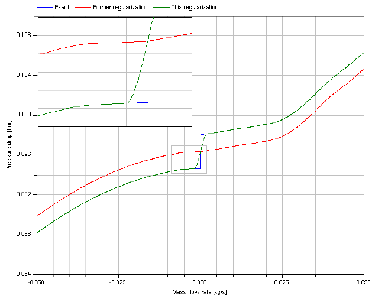
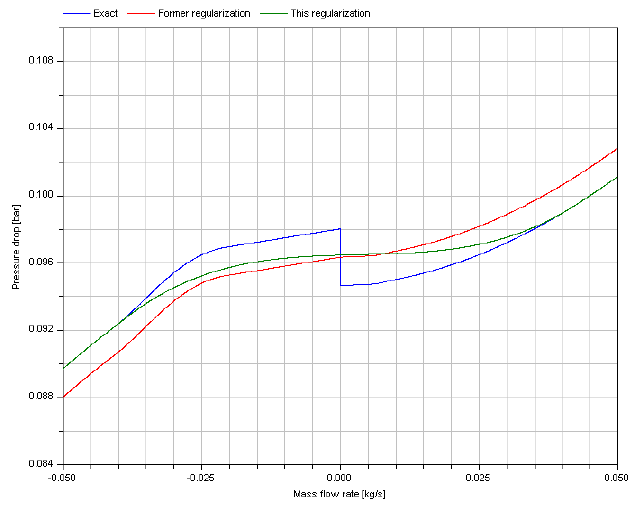

DetailedPipe wall friction for laminar and turbulent flow (detailed characteristic) |
|
Package Contents
|
Return mass flow rate m_flow as function of pressure loss dp, i.e., m_flow = f(dp), due to wall friction |
|
|
Return pressure loss dp as function of mass flow rate m_flow, i.e., dp = f(m_flow), due to wall friction |
|
|
Return mass flow rate m_flow as function of pressure loss dp, i.e., m_flow = f(dp), due to wall friction and static head |
|
|
pressureLoss_m_flow_staticHead Return pressure loss dp as function of mass flow rate m_flow, i.e., dp = f(m_flow), due to wall friction and static head |
|
|
Functions to calculate mass flow rate from friction pressure drop and vice versa |
Package Constants (6)
| use_mu |
Value: true Type: Boolean Description: = true, if mu_a/mu_b are used in function, otherwise value is not used |
|---|---|
| use_roughness |
Value: true Type: Boolean Description: = true, if roughness is used in function, otherwise value is not used |
| use_dp_small |
Value: true Type: Boolean Description: = true, if dp_small is used in function, otherwise value is not used |
| use_m_flow_small |
Value: true Type: Boolean Description: = true, if m_flow_small is used in function, otherwise value is not used |
| dp_is_zero |
Value: false Type: Boolean Description: = true, if no wall friction is present, i.e., dp = 0 (function massFlowRate_dp() cannot be used) |
| use_Re_turbulent |
Value: true Type: Boolean Description: = true, if Re_turbulent input is used in function, otherwise value is not used |
Information
This information is part of the Modelica Standard Library maintained by the Modelica Association.
This component defines the complete regime of wall friction. The details are described in the UsersGuide. The functional relationship of the friction loss factor λ is displayed in the next figure. Function massFlowRate_dp() defines the "red curve" ("Swamee and Jain"), where as function pressureLoss_m_flow() defines the "blue curve" ("Colebrook-White"). The two functions are inverses from each other and give slightly different results in the transition region between Re = 1500 .. 4000, in order to get explicit equations without solving a non-linear equation.

Additionally to wall friction, this component properly implements static head. With respect to the latter, two cases can be distinguished. In the case shown next, the change of elevation with the path from a to b has the opposite sign of the change of density.

In the case illustrated second, the change of elevation with the path from a to b has the same sign of the change of density.

Extended by (1)
|
Modelica.Fluid.Pipes.BaseClasses.FlowModels.PartialGenericPipeFlow
Wall friction model |